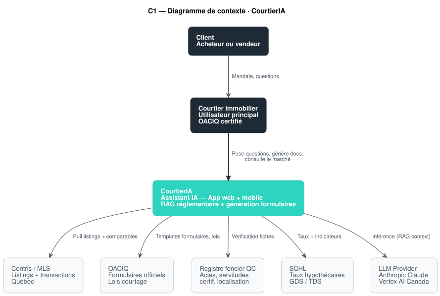
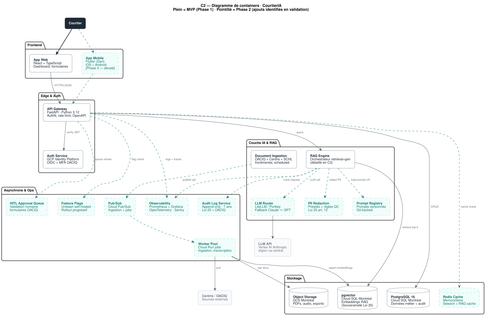
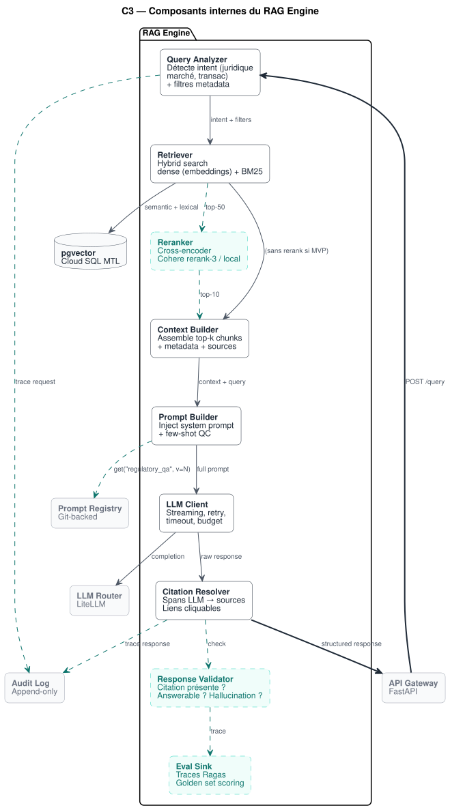
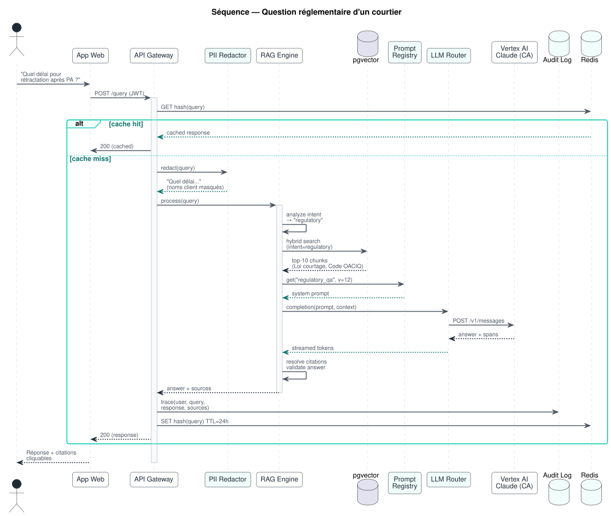
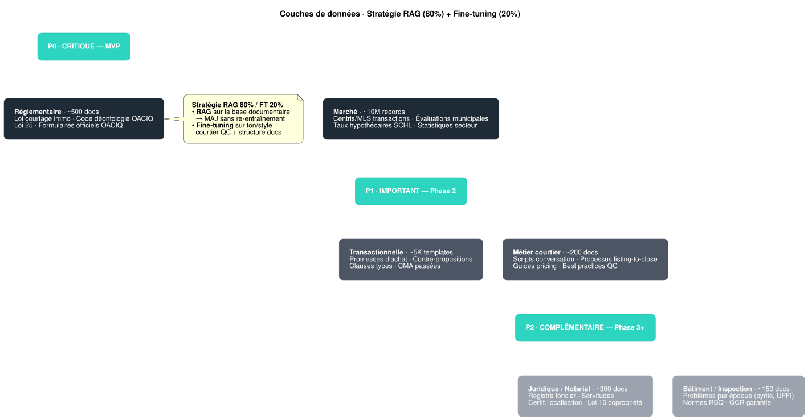

Architecture C4 de CourtierIA
Assistant IA pour courtiers immobiliers au Québec
Refonte des diagrammes du PDF d'avril 2026 en PlantUML versionnés, augmentée des composants manquants identifiés en revue critique (observabilité, event bus, PII redaction, prompt registry, eval RAG, HITL).
01Vue d'ensemble
CourtierIA est un copilote IA dédié aux courtiers immobiliers québécois. Il combine un moteur de recherche réglementaire (RAG sur OACIQ + lois QC), un générateur de formulaires, des analyses de marché (CMA), et — à terme — la transcription des conversations courtier-client.
Context → Container → Component → Code. Chaque niveau zoom progressivement. La séquence et les couches de données complètent la vision système.
02Contexte système
Vue d'ensemble des acteurs et des systèmes externes qui interagissent avec CourtierIA. Le courtier est l'utilisateur principal ; le système consomme cinq sources externes (OACIQ, Centris, Registre foncier, SCHL, LLM).

Acteurs & systèmes
| Acteur / Système | Rôle | Type |
|---|---|---|
| Courtier immobilier | Utilisateur principal. OACIQ certifié. Pose des questions réglementaires, génère des documents, consulte le marché. | Personne |
| Client | Acheteur ou vendeur. N'utilise pas directement CourtierIA — interagit avec le courtier. | Personne |
| CourtierIA | Système central. App web (MVP) + mobile (Phase 3). | Système |
| Centris / MLS | Source des listings et historiques de transactions au Québec. | Externe |
| OACIQ | Templates de formulaires officiels, Code de déontologie, Loi sur le courtage immobilier. | Externe |
| Registre foncier QC | Actes notariés, servitudes, certificats de localisation. | Externe |
| SCHL | Taux hypothécaires, ratios GDS/TDS, indicateurs de marché. | Externe |
| LLM Provider | Anthropic Claude via Vertex AI région ca-central (résidence des données). | Externe |
03Containers applicatifs
Décomposition en containers déployables. Plein = composants du PDF (Phase 1 MVP). Pointillé turquoise = composants ajoutés à l'architecture après revue critique (Phase 2). Cette refonte comble les angles morts d'observabilité, d'asynchronisme, de cache, de gouvernance des prompts et de conformité Loi 25.

Description par container
| Container | Rôle | Techno | Phase |
|---|---|---|---|
| App Web | Dashboard courtier, formulaires interactifs, Q&A réglementaire, CMA. Cible primaire B2B. | React 18 + TS, Vite | P1 |
| App Mobile | Version mobile pour usage terrain (visites, photos). Décalée à Phase 3 : B2B courtiers = web-first. | Flutter (Dart) | P3 |
| API Gateway | Point d'entrée unique. AuthN/AuthZ, rate-limit, OpenAPI auto-généré, validation requêtes. | FastAPI (Python 3.12) | P1 |
| Auth Service | OIDC + MFA obligatoire (OACIQ pro accounts). Reco : GCP Identity Platform au lieu de Keycloak (moins lourd). | GCP Identity Platform | P1 |
| RAG Engine | Cœur du système. Détaillé en C3. Orchestre retrieval hybride + génération + citations. | Python + LangChain / LlamaIndex | P1 |
| LLM Router | Découple le provider. Permet fallback Claude ↔ GPT, A/B testing modèles, gestion des budgets. | LiteLLM ou Portkey | P2 |
| PII Redaction | Critique Loi 25. Anonymise nom, adresse, NAS avant envoi au LLM externe. Réversible côté serveur. | Microsoft Presidio + règles QC | P2 |
| Prompt Registry | Versioning des system prompts. Permet rollback, A/B test, traçabilité (quel prompt a généré quelle réponse). | Git-backed (YAML + tags) | P2 |
| Document Ingestion | Pipeline incrémental d'ingestion OACIQ + Centris + SCHL. Chunking, embedding, upsert pgvector. | Python jobs + Cloud Composer | P1 |
| PostgreSQL 16 | Base relationnelle métier (courtiers, clients, requêtes, audit). ACID, RLS multi-tenant. | Cloud SQL PostgreSQL 16 (Montréal) | P1 |
| pgvector | Reco : remplace Pinecone. Stockage des embeddings dans Cloud SQL Montréal pour souveraineté Loi 25. Hybrid search dense + BM25. | Postgres + extension pgvector | P1 |
| Redis Cache | Cache des réponses RAG fréquentes (TTL 24h), session, rate-limit distribué. | GCP MemoryStore Redis | P2 |
| Object Storage | PDFs sources, exports formulaires, audio (Phase 3). Lifecycle policies. | GCS bucket Montréal | P1 |
| Pub/Sub | Bus d'événements pour découpler ingestion et API. Évite que Centris bloque les requêtes courtier. | GCP Pub/Sub | P2 |
| Worker Pool | Workers asynchrones (ingestion, transcription Phase 3, génération CMA batch). | Cloud Run jobs | P2 |
| Audit Log Service | Exigence Loi 25 + OACIQ. Journal append-only de toutes les actions (qui, quand, quoi, source). Rétention 7 ans. | Cloud Logging + BigQuery | P2 |
| Observability | Logs structurés, métriques applicatives, tracing distribué, alerting. Indispensable dès le MVP. | Prometheus + Grafana + OTEL + Sentry | P2 |
| Feature Flags | Rollout progressif des features Phase 2+, kill-switch en prod. | Unleash self-hosted | P2 |
| HITL Approval Queue | Critique. Tout document à valeur légale (promesse d'achat) passe par une review humaine avant signature. | Custom + UI dans App Web | P2 |
04Composants internes du RAG Engine
Le RAG Engine du PDF était décrit en table — voici son décomposé en composants. Chaque composant a une responsabilité unique, ce qui permet de les tester indépendamment et de les remplacer (par ex. swap du Reranker).

| Composant | Rôle | Phase |
|---|---|---|
| Query Analyzer | Détecte l'intent de la requête (juridique, marché, transac) et extrait les filtres metadata (région, type de bien, période). Permet un retrieval ciblé. | P1 |
| Retriever | Recherche hybride : dense (embeddings) + sparse (BM25) sur pgvector. Top-50 chunks candidats. | P1 |
| Reranker | Cross-encoder qui re-classe les top-50 → top-10 les plus pertinents. Améliore drastiquement la précision (20-30% sur les benchmarks). | P2 |
| Context Builder | Assemble les top-k chunks avec leur metadata (source, date, article de loi) pour injection dans le prompt. | P1 |
| Prompt Builder | Récupère le system prompt depuis le Prompt Registry (avec version), injecte le contexte et la query. Few-shot examples QC. | P1 |
| LLM Client | Streaming, retry exponentiel, timeouts, gestion budget (max tokens). | P1 |
| Citation Resolver | Mappe les spans de la réponse LLM aux sources documentaires d'origine. Génère des liens cliquables vers la loi/article cité. | P1 |
| Response Validator | Sanity check : la réponse contient-elle des citations ? Est-elle "answerable" depuis le contexte fourni ? Détecte hallucinations. | P2 |
| Eval Sink | Émet des traces (query, contexte, réponse, scores) vers la stack d'évaluation (Ragas-style). Permet de mesurer la qualité dans le temps. | P2 |
05Question réglementaire d'un courtier
Flux end-to-end pour le cas d'usage MVP : un courtier pose une question juridique (« Quel délai pour rétractation après une promesse d'achat ? »). Le diagramme montre le chemin complet, du clic jusqu'à la réponse citée.

Étapes détaillées
- Saisie courtier Le courtier tape la question dans l'App Web.
- Authentification L'API Gateway vérifie le JWT (signé par GCP Identity Platform, MFA OACIQ obligatoire).
- Cache check Redis vérifie si la même question (hash) a été posée récemment (TTL 24h). Si hit, réponse immédiate.
- PII Redaction Le PII Redactor anonymise les noms de clients ou adresses présents dans la question (Loi 25 art. 12 — minimisation).
- Analyse intent Le Query Analyzer du RAG Engine classe la requête comme "regulatory" et extrait les filtres metadata (loi courtage, OACIQ).
- Retrieval hybride pgvector exécute une recherche dense + BM25, retourne les 10 chunks les plus pertinents (Loi sur le courtage immobilier, Code OACIQ).
- Récupération du prompt Le Prompt Registry retourne le prompt « regulatory_qa » version 12 (avec few-shot examples QC).
- Appel LLM Le LLM Router envoie la requête à Vertex AI Anthropic Claude (région ca-central pour résidence des données).
- Génération streaming La réponse arrive token par token, avec spans pointant vers les chunks sources.
- Citations résolues Le Citation Resolver remplace les spans par des liens vers les articles de loi (URL canonique OACIQ).
- Audit + cache Le couple (query, réponse, sources) est tracé dans l'Audit Log Service (rétention 7 ans) et mis en cache Redis.
- Affichage Le courtier voit la réponse avec citations cliquables, peut copier ou exporter en PDF.
06Stratégie RAG + Fine-tuning
Six couches documentaires alimentent CourtierIA, priorisées P0 / P1 / P2. La stratégie 80/20 retient le RAG comme mécanisme principal (mises à jour sans re-entraînement) et réserve le fine-tuning au ton et à la structure des documents québécois.

| Couche | Exemples | Volume | Priorité |
|---|---|---|---|
| Réglementaire | Loi sur le courtage immobilier, Code de déontologie OACIQ, Loi 25, formulaires officiels. | ~500 docs | P0 |
| Marché | Centris/MLS transactions, évaluations municipales, taux hypothécaires SCHL. | ~10M records | P0 |
| Transactionnelle | Promesses d'achat, contre-propositions, clauses types, CMA passées. | ~5K templates | P1 |
| Métier courtier | Scripts de conversation, processus listing-to-close, guides pricing. | ~200 docs | P1 |
| Juridique / Notarial | Registre foncier, servitudes, certif. localisation, Loi 16 copropriété. | ~300 docs | P2 |
| Bâtiment / Inspection | Problèmes par époque (pyrite, UFFI), normes RBQ, garantie GCR. | ~150 docs | P2 |
07Choix technologiques
Stack proposée — la majorité reprise du PDF, avec deux changements critiques : pgvector au lieu de Pinecone (souveraineté Loi 25) et GCP Identity Platform au lieu de Keycloak (moins lourd à opérer pour solo dev).
08Cadre réglementaire
CourtierIA opère dans un environnement à forte charge réglementaire (3 niveaux : Québec, fédéral canadien, ordre professionnel). Chaque exigence légale a une contrepartie architecturale concrète.
| Loi / Règlement | Exigence clé | Réponse architecture |
|---|---|---|
| Loi 25 (Québec) | Consentement explicite, droit d'accès, RPRP, minimisation. | Privacy by design, DPO désigné, registre des traitements, PII Redaction avant LLM externe, Audit Log 7 ans. |
| Loi sur le courtage immobilier | Formulaires OACIQ obligatoires, divulgation, tenue de dossiers. | Templates OACIQ validés, audit trail des modifications, HITL Approval Queue avant signature. |
| LPRPDE (fédéral) | Protection des données personnelles, consentement, sécurité. | Chiffrement E2E (TLS 1.3 + at-rest), rétention minimale, suppression sur demande. |
| PIPEDA | Collecte proportionnelle, transparence sur l'IA. | Politique confidentialité, opt-out IA explicite, divulgation que IA est utilisée pour le draft. |
| OACIQ — code de déontologie | Compétence, intégrité, secret professionnel. | HITL obligatoire pour docs juridiques, MFA pour pro accounts, séparation données par courtier (RLS). |
ca-central1 dès qu'il est disponible, sinon PII Redaction obligatoire + DPA signé + opt-in courtier explicite.
09Validation du PDF · gaps identifiés
Verdict structuré sur chaque proposition du PDF d'avril 2026. ✅ Validé. ⚠️ À nuancer. ❌ Manquant ou critique.
| Élément du PDF | Verdict | Justification |
|---|---|---|
| Approche RAG 80% / FT 20% | ✅ Validé | Aligné avec l'état de l'art pour les domaines à forte charge réglementaire (mises à jour fréquentes). Le FT sur ton/structure est la bonne dose. |
| GCP Montréal | ✅ Validé | Souveraineté + Loi 25 + écosystème managé. Choix solide. |
| Stack Flutter / React / FastAPI | ✅ Validé | Technos matures, écosystèmes larges, recrutement facile. |
| Roadmap 4 phases / 12 mois | ✅ Validé | Séquence MVP → Marché → Voix → Intelligence cohérente. Calendrier réaliste pour un solo / petite équipe. |
| Pinecone comme vector store | ⚠️ À revoir | Pinecone est US-hosted = risque Loi 25 sur PII. Recommandation : pgvector sur Cloud SQL Montréal. Mutualise l'infra, hybrid search natif, souveraineté. |
| Keycloak pour Auth | ⚠️ Trop lourd | Keycloak demande sa propre stack JVM + DB. Pour un solo, GCP Identity Platform (ou Supabase Auth si déjà en place) est plus pragmatique. Keycloak revient en Phase 4 si SSO entreprise. |
| OpenAI / Anthropic API directe | ⚠️ Résidence | Appels directs aux APIs US = risque Loi 25. Mitigation : Vertex AI Anthropic Claude région ca-central + PII Redaction + DPA. |
| Phase 2 = mobile beta | ⚠️ Trop tôt | Les courtiers B2B utilisent majoritairement leur ordinateur (CRM, listings, docs). Mobile en Phase 2 distrait des sujets critiques (CMA, ingestion Centris). Décaler Flutter en Phase 3. |
| Pas d'observabilité | ❌ Manquant | Indispensable dès le MVP. Sans logs structurés + traces, debug en prod = impossible. Phase 1 obligatoire : Cloud Logging + OTEL minimum. |
| Pas d'event bus / async | ❌ Manquant | L'ingestion Centris (~10M records) doit être asynchrone — sinon elle bloque l'API. Pub/Sub + workers à introduire en Phase 2. |
| Pas de cache | ❌ Manquant | Sans cache : coût LLM × N requêtes identiques. Redis pour cache RAG + rate-limit. |
| Pas de PII Redaction | ❌ Critique | Loi 25 art. 12 — minimisation. Envoyer un nom de client à OpenAI/Anthropic sans redaction est juridiquement discutable. À introduire avant le premier client en prod. |
| Pas d'évaluation RAG | ❌ Manquant | Sans golden set + métriques (citation accuracy, hallucination rate, latency p95), on déploie sans savoir si la qualité dérive. Ragas + 100 questions de référence en Phase 2. |
| Pas de Prompt Registry | ❌ Manquant | Modifier un prompt en prod sans versioning = impossible à rollback. Git-backed avec tags sémantiques. |
| Pas de HITL pour docs légaux | ❌ Critique | Une promesse d'achat est un engagement légal. Aucun document juridique ne devrait être généré 100% IA sans validation humaine. Approval Queue obligatoire. |
| Pas de MFA | ❌ Critique | Compte courtier OACIQ = données clients sensibles. MFA dès le compte créé. Non négociable. |
| Pas de feature flags | 🟡 Nice-to-have | Critique en Phase 2+ pour rollout progressif. Unleash self-hosted suffit. |
10Au-delà du PDF · plomberie + qualité
Le PDF résumait Phase 2 à « Centris + CMA + mobile beta ». La revue critique pousse à scinder la Phase 2 en trois sous-phases et à décaler le mobile en Phase 3. Le mobile sans plomberie production solide = un MVP mobile qui plante.
Phase 2.a · Plomberie production Mois 3-4
- Observabilité — Prometheus + Grafana + OpenTelemetry + Sentry.
- Pub/Sub + Worker Pool — découpler l'ingestion Centris du chemin requête.
- Redis — cache RAG (TTL 24h sur queries fréquentes) + rate-limit.
- LLM Router (LiteLLM) — fallback Anthropic ↔ OpenAI, gestion budget par tenant.
- PII Redaction service — Presidio + règles QC custom (NAS, code postal QC, adresse).
Phase 2.b · Données & qualité Mois 4-5
- Centris/MLS ingestion incrémentale (Airbyte ou job Cloud Composer).
- Prompt Registry — Git-backed, tags sémantiques (regulatory_qa@v12).
- Eval harness RAG — Ragas + golden set 100 questions juridiques + dashboard qualité.
- Feature Flags — Unleash self-hosted, rollouts gradués.
Phase 2.c · Workflow courtier Mois 5-6
- CMA automatisé — Centris + heuristiques marché + génération PDF.
- HITL Approval Queue pour formulaires OACIQ générés (validation courtier obligatoire).
- Calculateur hypothécaire SCHL/GDS/TDS intégré.
- Dashboard analytics web — pipeline courtier, performance, métriques.
11Trajectoire MVP → GA 1.0
Roadmap révisée après revue critique. Phase 2 augmentée, mobile décalé en Phase 3.
- RAG réglementaire (OACIQ + lois QC)
- Assistant Q&A avec citations
- Génération formulaires OACIQ
- App Web React (early adopters)
- Logs minimum + audit basique
- 2.a Observabilité, Pub/Sub, Redis, LLM Router, PII Redaction
- 2.b Centris ingestion, Prompt Registry, eval RAG
- 2.c CMA auto, HITL queue, calculateur hypo
- Dashboard analytics web
- Transcription conversations (style Plume)
- Notes de visite auto
- App Mobile Flutter beta fermée
- Intégration Registre foncier
- Beta ouverte 50 courtiers
- Fine-tuning ton courtier QC
- Analytics prédictif (prix, durée)
- Gestion offres multiples IA
- Intégration CRM + relances
- Lancement commercial v1.0